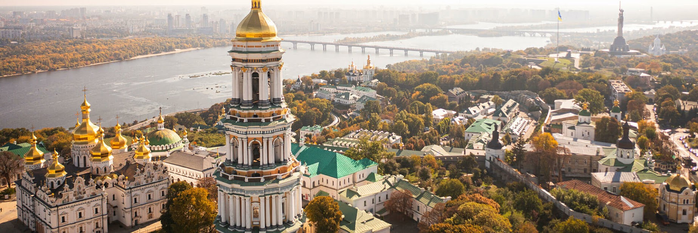

Україна займає площу 603 628 км2 (233 062 квадратних миль) і є другою за величиною країною в Європі. Населення України становить близько 44,7 мільйона чоловік, що робить її восьмою за чисельністю населення країною в Європі. Її столицею і найбільшим містом є Київ. Україна межує з: Європейським Союзом (Словаччина, Польща, Угорщина, Румунія), Молдовою, Білоруссю, Росією.
Київ — столиця України. Це також найбільше місто за площею (близько 800 квадратних кілометрів) і за кількістю населення (приблизно 3,5 мільйона людей). Інші важливі міста: Харків, Дніпро, Одеса, Донецьк, Львів.
Українці – 77,8%, росіяни – 17,3%, кримські татари – 0,5%, інші – 4,9%
Назва «Україна» (УКРАЇНА) походить від слов’янського слова «край», що означає «земля» або «кордон», або також «батьківщина», «край, країна». Найдавніша згадка про слово «Україна» датується 1187 роком (Київський літопис).
Український прапор складається з двох рівних горизонтальних смуг синього та жовтого кольорів, що символізують блакитне небо та жовті пшеничні поля.